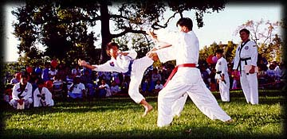
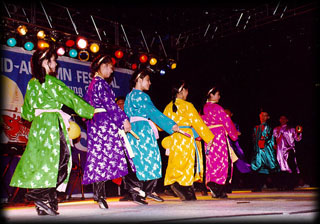
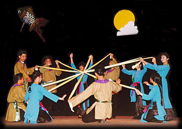

 |
Martial Arts:Various troops will demonstrate their talent and techniques. At night, they will lead the children's Lantern Procession. |
| Traditional Performances: One week before the Festival, 13 high schools and non-profit organizations compete in 3 categories: drama, music, and dance; the winners will perform at the Festival. |  |
 |
Canh Chim Bách Viêt, also known as the Wings of 100 Viets, is a dance troupe based in San Jose that will perform their unique choreography. The presence of popular local singers and a band will round out this portion of the day's entertainment. |